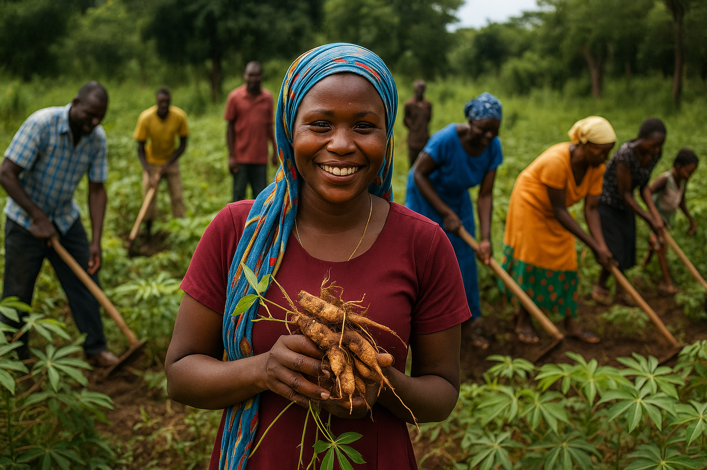

Emergency Response
Rapid response with food, NFI & shelter support for displaced families affected by conflict and flooding.
- Food baskets & NFI distribution
- Cash voucher assistance
- Emergency shelter kits
On the ground: Caritas rapid response teams pre-position relief stocks, conduct joint needs assessments and coordinate with parish volunteers so families receive help within hours of a crisis.
Water, Sanitation & Hygiene (WASH)
Safe water access to reduce disease and hygiene promotion for affected communities to protect health.
- Sanitation/latrine construction & rehabilitation
- Distribution of hygiene kits
- Community hygiene promotion
Deeper impact: We rehabilitate boreholes with trained water committees, promote menstrual hygiene for girls, and integrate cholera prevention messaging with local leaders.
Livelihood & Resilience
Help families & individuals strengthen livelihoods through agricultural and enterprise support.
- S.A.C.C.O. (savings & credit cooperatives) support
- Farmer field school programs
Building resilience: We mentor producer groups, provide drought-tolerant seeds, and link women micro-entrepreneurs to markets so incomes are diversified year-round.

Agriculture & Food Security
Strengthening household food systems through climate-smart agriculture, farmer organising and market access.
- Farmer field schools that share climate-resilient techniques
- Seed and tool support for smallholder families
- Community grain banks with post-harvest management coaching
Harvesting hope: Parish agronomists accompany producer groups to boost yields, protect ecosystems and build food reserves.
Health & Nutrition
Primary health care, maternal and child nutrition, referrals and community health promotion.
- Nutrition screening & treatment
- PHC outreach services
- NFI & health education
What this means: Our mobile health teams partner with parish clinics to reach mothers and children in hard-to-access areas with essential medicines, referral pathways and nutrition supplements.
Education
Education in emergencies, teacher support and building resilience so children can learn safely.
- In Education in Emergencies (E.I.E.) safe learning spaces
- Psychosocial support activities
- Learning life-skills education
Why it matters: Trauma-informed teachers, school feeding and protection desks help children heal, stay in class and build a future rooted in peace.
Peacebuilding
Work to address conflict and restore peace through social cohesion and resilience building.
- Dialogue for Peace & Healing
- Vocational skills training for youths & women empowerment
What this means: We convene chiefs, faith leaders and youth facilitators to resolve disputes, rebuild trust and reduce the drivers of violence.
Shelter, Settlement & Recovery
Restoring dignity for displaced families through safe shelter solutions, holistic recovery and community integration.
- Provision of emergency shelter materials
- Psychological support services for coping and resilience
- Integration processes that reconnect families with host communities
Rebuilding lives: Our shelter teams coordinate with parishes and local authorities to deliver assistance that is safe, inclusive and sustainable.
Protection
Safeguarding our communities from exploitation, neglect and abuse through prevention, response and survivor-centred care.
- Case management for both child protection & GBV cases.
- Child protection in SGBV cases.
- Safeguards in institutions.
Safety first: Our safeguarding officers accompany survivors, train staff and parish volunteers, and strengthen community reporting mechanisms.

Environmental Protection
Mobilising parishes and communities to care for creation through climate resilience, conservation and Laudato Si' action plans.
- Community-led tree planting and reforestation initiatives.
- Waste management and recycling campaigns for cleaner settlements.
- Climate awareness sessions rooted in Laudato Si'.
Stewarding creation: Our environmental stewards collaborate with youth groups and parish leaders to reduce ecological risks and build resilience.